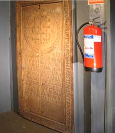
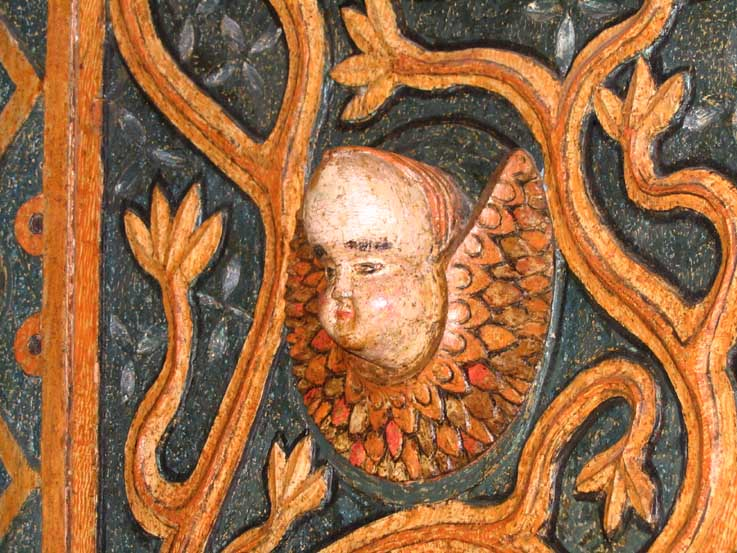
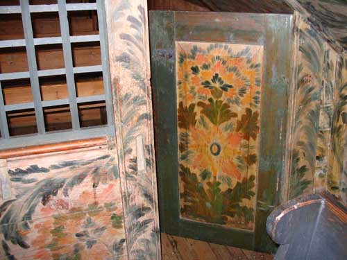

Søgne gamle kirke
Foto: Torvald Slettebø, Universitetet i Agder, Seniorsenteret (2004)
Tekst: Jostein Andreassen
I 1861 ble en ny kirke bygd på Lunde, men også i vår tid er Søgne gamle kirke ofte i bruk. Det er svært populært å gifte seg der, og mange turister kommer for å se de vakre renessansemaleriene i skipet og koret.
Her er kirken sett fra sørøst. Den gamle inngangsdøra var der det nåværende 3. vinduet fra vest befinner seg. Utenfor stod en klokkestøpul. Den høye gravstøtta til Fredrik Langefeldt, død 1903, dominerer. Se ”Søgneboka I”, side 196.
VÅPENHUS OG TÅRN: Tårnbygningen og våpenhuset er fra ca 1760. Noen stokker kan vi se er brukt før; etter tradisjonen stammer de fra Olavskapellet på Kapelløya i Ny-Hellesund. Under himlingen i våpenhuset er spor etter renessansemalerier på tilbrakte bord, sannsynligvis fra et draperi.
TÅRNET: Her ser vi rett opp i taket i tårnet, over klokken. Flaggermusene henger der oppe og lot seg knapt forstyrre. Mange zoologer er interessert i å forske på flaggermus, og da oppsøker de gjerne slike steder, hvor de ber kirkens ansatte om å la dyrene få lov til å være i fred.
VÅPENHUSET - MINNETAVLEN: I våpenhuset henger en minnetavle over Christen Jensen fra 1622, altså eldre enn kirken. Han var sokneprest nr 2 i Søgne etter at vi ble egen menighet i 1604. Det var hans etterfølger Niels Olsen Faaborg som fikk laget den, og teksten er på latin fra Job 19 – ”Jeg vet at min gjenløser lever...”
ALTERTAVLEN: Altertavlen regnes som det fineste i kirken. Den er sannsynligvis laget av Thomas Snekker, en elev av den kjente kunstneren Gottfried Henschel. Sammen med to andre brukte han fem uker på arbeidet, som likner veldig på altertavlen i Røldal stavkirke og i Vikedal i Ryfylke og hvor Thomas også virket.
ALTERTAVLEN: Utsmykningen på altertavlen er hentet fra nattverdliturgien, med tekster og motiv. Alterbildet er fra nattverden. Disiplene sitter ved bordet sammen med Jesus, som har Johannes ”på fanget”.
Det er en ukjent kunstner som har malt det, Christian Contrafeier, som betyr ”portrettmaler”. Vi vet ikke hvem han var, men han var svært dyktig. Bildet er signert ”CN fec[it] 65” – Christian gjorde dette 1665.
ALTERTAVLEN: På kanten av altertavlen er det et litt skremmende fugleliknende hode på hver side. Det fortelles at man gjorde slikt for å vise onde ånder som var underveis, at de eksisterende på stedet var på vei bort og at de derfor bare kunne snu. Slik er det også på lydhimmelen.

ALTERTAVLEN: Øverst på altertavlen er Jesus på korset i tradisjonell stil. En mengde utskjæringer, border og søyler fyller opp arealet. Altertavlen er fra 1665.
ALTERTAVLEN: Englehode på kanten av altertavlen, innesluttet av ranker. Denne lille detaljen viser det omfattende arbeidet som har vært utført, og med stor dyktighet.

ALTERTAVLEN: Vifteliknende utskjæring i sirkel på altertavlen kommuniserer med en slik figur i kordøra og på lydhimmelen, hvor den er i halvfigur. Dette er Stavanger-renessanse og viser at arbeidet har blitt gjort av kunstnere tilknyttet domkirken i Stavanger, som var bispesete fram til 1680-årene.
KORET: Vi ser den laftebygde veggen i koret. Ola Storsletten fra Norsk institutt for kulturminneforskning tok i 1993 dendrokronologiske prøver fra disse stokkene. Han fant at de var hogd i 1643. De er dekorert med barokkranker av ukjent kunstner.
KORET: I skråhimlingen mot nord i koret ser vi Matteus med Johs. 3,16 under, på svart. Her var bordene stokket rundt, og det var ikke mulig å få noe system i kunsten før hvert bord var forhøyd med ei list. Mot vest og øst og i taket har det nok vært tilsvarende dekorasjoner, med Markus og Johannes. Det er synd at bordene her er blitt skiftet ut.
SKRÅHIMLINGEN: Fra skråhimlingen mot sør i koret. Evangelisten Lukas med Johannes 3.16 under i det svarte feltet. Resten er et fyrverkeri av lotusblomster, akantusranker, drueklaser etc, noe med opprinnelig farge, strålende dyktig utført.
KORDØRA: Dette maleriet av Jesus på korset, krusifikset må vi nesten si, ”henger” over kordøra på tradisjonelt vis. Over står Pilatus` forklarende tekst på latin (Joh. 19, 21f.). På oppfordring har Riksantikvarens folk kommet på besøk for å se på dette maleriet, etter forespørsel om å forsterke malingen slik at folk i kirken skulle få se bildet litt mer tydelig. Dette ble avvist.

KORDØREN: Fra kordøren mot kirkeskipet. Vi ser detaljer av utsmykningen og noe av blomsterborden i barokk på stokkene i koret og vinduet i kirkeskipet nær prekestolen. Fargene er sterke og flotte.
BISPESTOLEN: Fra bispestolen i koret med sakristidøren i bakgrunnen. Både i prestegårdstolen på galleriet og på bispestolen har en ukjent og fremragende barokkmaler utfoldet seg i stor stil. Dette regnes nesten som unikt av fagfolk og er noe av det ypperste i kirken.
BISPESTOLEN: Fra veggen på bispestolen. Her har noen av bispene som var på visitas på 1700-tallet fått malt inn navnene sine. Rasmus Paludan og Jens Christian Spidberg er et par av dem. Til venstre en flott barokkdekorasjon.
PRESTEGÅRDSSTOLEN: Fra inngangen til Prestegårdsstolen på galleriet. Her ser vi at den dyktige, men ukjente barokkmaleren har utfoldet seg og malt en nydelig blomsterdekorasjon på døra. Denne, sammen med blomsten på motsatt side, er kanskje det mest avanserte av kunst i hele kirken.
PRESTEGÅRDSSTOLEN: (Fortsatt fra forrige bilde) Her er døra i Prestegårdsstolen sett fra innsiden. Det er et fyrverkeri av farger, det gløder fra denne dekorasjonen! Vi ser også litt av barokkmalingen fra selve veggene og sjalusiet mot resten av galleriet.
PRESTEGÅRDSSTOLEN: Her ser vi at barokkmaleren har vært i sving i Prestegårdsstolen. Praktfulle blomsterranker i suveren stil – og utenfor billedkanten, der skråhimlingen stod, har en dårlig amatør prøvd å fylle ut trekanten som da ble uten noen dekor. Fryktelig.

PRESTEGÅRDSSTOLEN: I Prestegårdsstolen er denne lille dekorasjonen i tilnærmet Louis-Seize-stil: ”Jacobus Hount Sillam ornavit 1787” – [sokneprest Jakob Hount dekorerte dette 1787”. Jakob var far til Peter U. M. Hount, som ble eidsvollsmann og hovedtalsmann mot ”Jødeparagrafen”, men han fikk bare seks andre med seg. Peter representerte Smaalenene – dvs. Østfold.

GALLERIFRONTEN MOT VEST: Vi ser fra øverst til venstre Langfeldt-stolen og litt av orgelet, nederst fire av billedfeltene til førstnevnte: Markus, Lukas, Johannes og kanskje Paulus (navnet er uleselig). Videre ser vi i større format Jesaia, Jeremias og Esekiel. Matteus er utenfor billedfeltet til venstre og Daniel til høyre.

LANGEFELDT-STOLEN: Madonna med barnet fra Langefeldt-stolen på galleriet. Det var sikkert nokså overraskende for de som restaurerte kirken på 1950-tallet å finne denne dekorasjonen her. Stolen er fra 1706 og satt opp av Johan Langenfeldt fra Hamburg; kanskje var han katolikk?
LANGEFELDT-STOLEN: Dette er en fugledekorasjon fra taket i Langefeldt-stolen. Bordet rundt er tilnærmet rokokko, så vi har fire stilarter i kirken slik den nå er: Louis-Seize, rokokko, renessanse og barokk.
LANGEFELDT-STOLEN: Her er annen kunst fra taket i Langefeldt-stolen – en basunengel. Den dekker store deler av taket og er av den grunn vanskelig å få med på ett enkelt bilde. Det må ha vært en fremmelig person, denne Johan Langenfeldt, som fikk stolen oppsatt i 1706, opprinnelig på et annet sted i kirken, sannsynligvis i kroken rett under i 1. etg.
LANGEFELDT-STOLEN: Her ser vi detaljer fra øverst i Langefeldt-stolen. Sterke farger i rødt og grønt. Blomsterranker og utskjæringer.
SKIPET: Det heter seg at alle som eide benkene (”stolene”), kunne sette inn sin egen dør. Derfor er det mange forskjellige utforminger på disse i kirken. Noen er vakkert utskåret; dessverre befalte biskop Johan Storm Munch i 1830 at ”vangene” øverst måtte kuttes rette, derfor er de borte. En ser merke etter dem på bærebjelkene på nordsiden.
GALLERIFRONTEN: Vi ser Jesus omgitt av seks apostler på gallerifronten. Jesus nest til venstre. De forskjellige apostlene holder et redskap i sin hånd som atributt, det som henholdsvis ble brukt til deres martyrium. Thomas holder f.eks. et spyd; etter tradisjonen ble han drept med et spyd i Madras i India.
GALLERIFRONTEN MOT NORD: Midt på gallerifronten er det bilde av Jesus og 12 apostler, med ”Salvater mundi” - Verdens frelser – i midten. Han holder en jordklode med et kors på – symbol på verdensmisjonen. Judas er erstattet med Mattias, som loddet falt på etter at forræderen var død (Ap.Gj. 1,26).
LYSEKRONEN: Lysekronen i kirkeskipet er fra 1699. Denne ble gitt som gave til kirken av gjestegiver Ole Olsen Høllen. Han flyttet siden til Lammeholmen utenfor Trysnes. Om Ole kan du lese i ”Søgneboka I”, side 294.
KIRKESKIPET: Kirkeskipet ”Løvendals Galley”, Tordensskjolds skip. Det ble bygd i Brevik i 1712, og sjøhelten kom beviselig inn til Ny-Hellesund den 23. nov. samme år og søkte nødhavn. Det hadde 18 kanoner og 150 mann om bord. ”Gud være takk for beholden [nådd] havn”, skrev Tordenskjold i dekksdagboka. Skiper ble opprinnelig gitt til kirken av Nikolai Langefeldt ca 1730 og fjernet ca 1833, hengt opp igjen i ny utgave i 1998. En plakat om skipet med flere opplysninger henger i våpenhuset.
PREKESTOLEN: Prekestolen stammer trolig fra den forrige kirken, i så fall er den ifølge Riksantikvarens folk fra ca 1570 og da en av de 10 eldste prekestolene i landet. På gelenderet opp står det: ”Opplad mine øine saa jeg kan skue de underfulde ting i din lov” (Salme 119,18).
PREKESTOLEN: På fronten oppe står et skriftbånd på latin fra Vulgata, den latinske bibel: ”Verbum Dei manet in aeternum Asa 40“ – Guds ord forblir til evig tid Jesaia 40 [8]. Videre ”Beati qui audiunt ve[r]bum Dei et custodiunt illud” – Salige er de som hører Guds ord og bevarer det (Luk. 11,28). Her er ”Asa” og ”verbum” i NT-sitatet skrevet feil – det skal være ”Isa[ja]” og ”verbum”.
LYDHIMMELEN: Lydhimmelen eller baldakinen korresponderer fint med utsmykningen på altertavlen, og en kan straks lure på om ikke denne er laget av de samme snekkere. Den er besmykket med englehoder, et djevlehode i hver ende, liggende halvmåner (som symboliserer Jomfru Maria!) og skriftbåndet lyder: ”Gud til ære og kierken til prydelse hafuer Peder Simensen og Jon Omunsøn bekaastet denne kronne at staffere Anno 1665”. Den ene var gjestgiver i Høllen, den andre bonde på Tangvall.
SKRÅHIMLINGEN: Her holder to engler en stor tavle med skriftsted fra Johannes åpenbaring 7, 10: ”Loff oc Ære oc Viisdom oc Tack oc Pris oc Kraft oc Styrke vere vor Gud fra euighed til euighed. Amen.” Dette for å fylle ut hele skråhimlingen som skulle ellers bare ha plass til seks apostler, som på nordsiden.
BILLEDFELT PÅ SØRVEGGEN: Stort billedfelt på sørveggen viser pinsedag. Apostlene blir fylt med Den hellige ånd, vi ser glorien rundt hodet og noe som likner på tente lys over disse. Duen over, som det stråler fra, er symbol på Den hellige ånd.
SKRÅHIMLINGEN: Her ser vi skråhimlingen fra Langefeldt-stolen. En oval med ukjent apostel i forgrunnen. Inni ovalen er en del av trosbekjennelsen.
I TAKET - SKYMALINGEN: Skymalingen i taket i kirkeskipet er ikke opprinnelig. Under er, ifølge Odd Helland fra Riksantikvaren, som stod for fargerestaureringen i 1950-årene, egne felter med soler, måner og stjerner. Sola er symbol på Gud, månen – om det er fullmåne – Jesus, og stjernene er englene.
PÅ KIRKEGÅRDEN - GRAVPLATEN: Gravplaten til Mathilde Cathinka Bjørnsons grav. Hun var dikterens søster, og han selv har skrevet verset:
”Hun holdt den lange uge
i sygdoms trængsel ud,
gik saa en søndags morgen
sin kirkegang til Gud.”
Se Jostein Andreassen: ”Fred er ei det beste. Bjørnstjerne Bjørnson og Søgne” (2002), s. 58.
KIRKEKLOKKENE: Oppe i tårnet er det to kirkeklokker. På den største står: ”SOLI DEO GLORIA. [Gud alene æren.] Og videre: ”HELP HERR IESU AT DEN NYE KLOKKE MO OS AL I HIMLEN LOKKE. UMSTOBT I H:[ERR] PASTOR DANIEL SO. SCHIBES TID I CHRISTIANSANT AF IACOB RENDLER AN[NO]. 1746.” På den andre: “SOLI DEO GLORIA. MEFECIT IACOB RENDLER AN[N]O. 1749.” [Jacob Rendler gjorde (laget) meg i det Herrens år 1749.] Den største av disse hang i Søgne hovedkirke fra 1861-1956, da den ble tilbakeført.